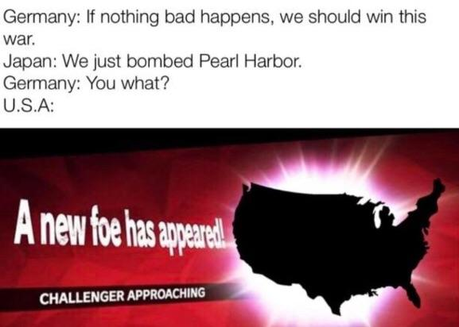

Les jeux Smash ont marqué le jeu vidéo d'une empreinte reconnaissable. Pour commencer, les jeux qui reprennent le concept de Smash comme de Brawlallah ou Ligue mortelle
sur PC, mais aussi Brawlout sur PC, PS3, Xbox et Switch. Mais ce n'est pas tout, il existe aussi des références à Smash dans certains jeux et animés comme par
exemple : "Kaguya-sama love is War" avec une scène où l'on peut voir deux personnages qui jouent à un jeu similaire, Danganronpa 3 Zetsubou-hen, dans l'opening de Gamers,
quelques mentions du jeu dans la célèbre série Netflix "Sex education" car l'acteur principal (Asa Butterfield) est un joueur compététitif chez Team Liquid et pour finir une scène dans Yuru Yuri avec le jeu Namo Bros.
Sinon un meme populaire sur le net c'est le fameux 'a new foe has appeared'. Ce meme est tellement connu qu'un template a été créé pour en faire d'autres.
Voici un exemple:

Au sein de la communauté, y a un jargon que les Smasheurs utilisent avant le début de chaque duel: c'est le terme 'No Johns'.
Ce terme veut dire "pas d'excuses". Il est tellement utilisé que même le directeur de Nintendo USA Reggie Fils-Aimé l'utilise pour l'EVO 2014 et le lancement de Sm4sh sur 3DS.
Les Tiers Lists
Dans la communauté Smash, il y a des personnes qui classent les combattants par leur apptitudes et l'efficacité en combat. C'est ce qu'on appelle une tier ist et ça ressemble
à ça:
S-Tier étant le meilleur rang dans la liste et F-Tier le pire.
MAIS...
Les Tiers Lists sont SUBJECTIVES, donc il n'y a pas de Tiers Lists officiel du jeu. C'est ce qui rend le jeu encore plus excitant et la Tiers Lists change, s'adapte au fil
du jeu et des joueurs.
Par exemple celle-là c'est la Tiers Lists de ZeRo
L'e-Sport
L'Esport sur Smash a commencé en 2002 sur Melee avec le Tournament Go series, qui fixa les règles des parties compétitives que nous connaissons aujourd'hui.
Melee a connu son âge d'or durant la période de 2003 à 2014, notamment à travers certains joueurs devenus des légendes du ou tout simplement ayant marqué leur temps
comme Ken Hoang connu sous les pseudos "Kenny" et surnommé comme étant "le Roi de Smash" ou "Liquid'Ken", accompagné de Christopher "Azen" McMullen, Daniel "ChuDat" Rodriguez,
Joel Isai "Isai" Alvarado, Christopher "PC Chris" Szygiel, Daniel "KoreanDJ" Jung, et Jason "Mew2King" Zimmerman.
Puis Brawl arriva sur la scène compétitive de Smash avec de nombreuses critiques au sujet de l'intégration des objets et ses méchaniques entre 2008 avec l'EVO et 2009.
S'en suit la période surnommée "l'âge sombre" avec le déclin majeur mais temporaire de Melee et la chute de Brawl dès 2009, mais grâce au Revival Of Melee 2009, Smash entamma une nouvelle période de sa vie
eSportive avec l'ère de Platine et ses cinq "Dieux" : Mew2King, Mango, PPMD, Armada et Hungrybox, et celui que l'on surnomme "le tueur de Dieux" aka William "Leffen" Hjelte.
Sur l'autre grand jeu Smash de Nintendo, Ultimate, un joueur à fait son apparition, et peut-être considéré lui aussi comme un "Dieu" : MkLeo. C'est un joueur professionnel
de Smash Ultimate et connu comme le meilleur joueur de ce Smash actuel. Il est notamment connu pour avoir gagner le tournoi SSBU à l'EVO 2019 qui est le plus grand événement de jeux de combats. Pour parler plus en détail de
Smash en France, il existe un joueur qui est considéré, et à juste titre, comme le meilleur joueur européen et le meilleur Wario, William 'Gluttony' Belaïd.
Les Spécialistes
Les Spécialistes sont des personnes qui suivent toujours sur l'actualité et l'évolution de la méta du jeu. Ces personnes sont souvent soit des anciens joueurs compétitif
soit des fans qui connaissent très bien l'univers et la mécanique du jeu. Nous avons Bronol pour la communauté francophone et ZeRo pour la communauté global.